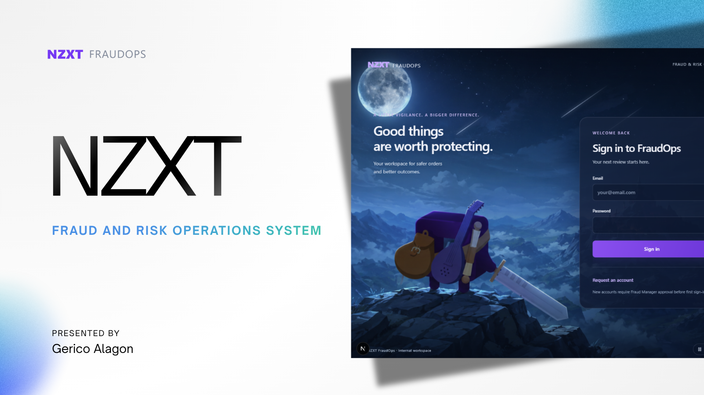
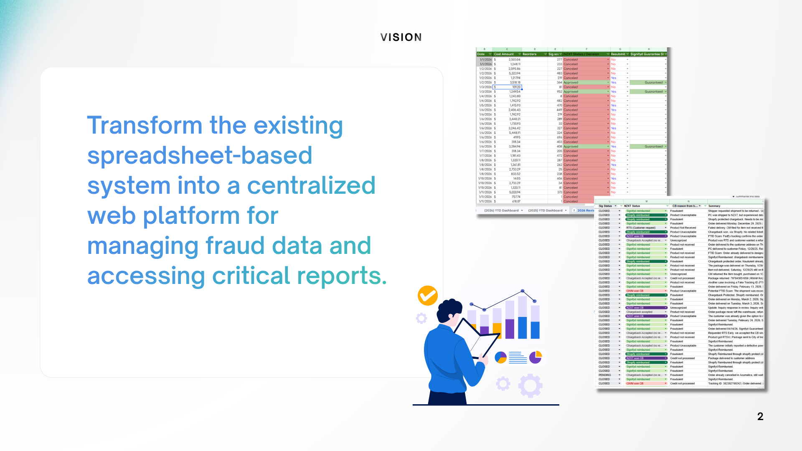
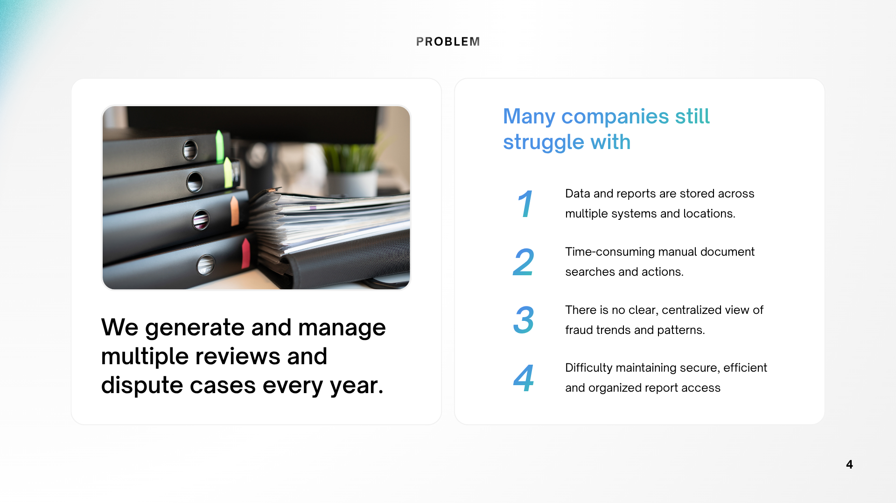
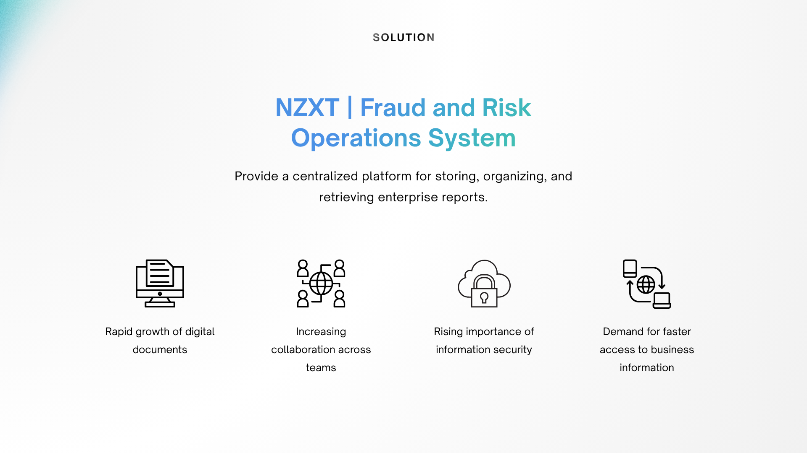
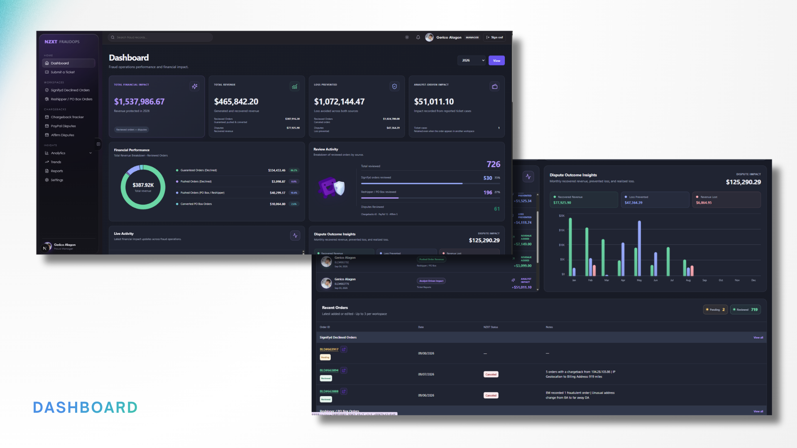
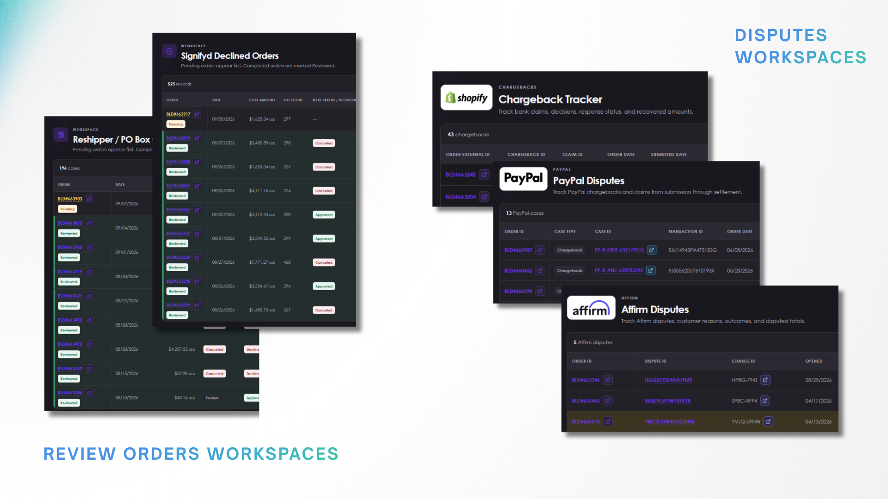
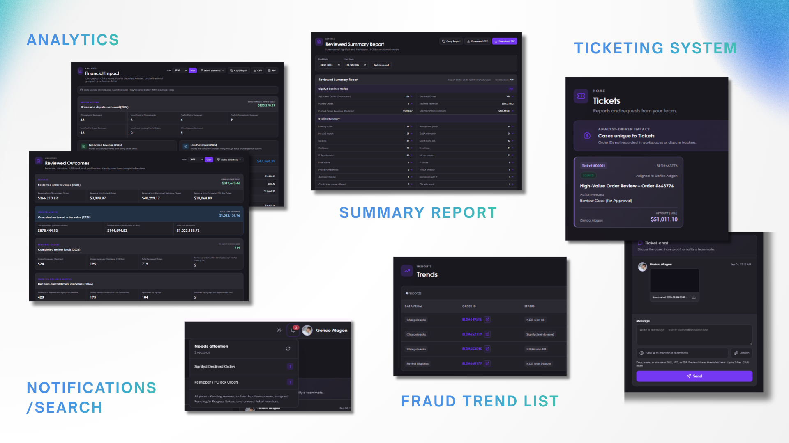

01 · WORK PROJECT · NZXT / WHIM
FraudOps.
A fraud and risk operations system built to centralize fraud data, strengthen loss prevention, identify emerging fraud trends, and support revenue generation and recovery.

THE CHALLENGE
From scattered sheets to one operational view.
Fraud reviews and dispute records were spread across spreadsheets and separate systems. Manual searches slowed investigations, reporting was difficult to maintain, and teams lacked a clear view of fraud patterns, decisions, and financial outcomes.
FraudOps turns those fragmented activities into a structured workspace where analysts can review cases, retrieve documentation, follow outcomes, and understand the revenue and loss-prevention impact of their decisions.
CORE WORKSPACES
Designed around the analyst workflow.
- Central dashboard for financial impact, recovered revenue, prevented loss, review volume, and recent activity.
- Dedicated order-review queues for Signifyd-declined orders and reshipper or PO-box cases.
- Dispute trackers for Shopify chargebacks, PayPal cases, and Affirm disputes.
- Analytics, reviewed-outcome summaries, exportable reports, and a list of emerging fraud trends.
- Ticketing, team discussion, notifications, and search for cases requiring analyst attention.
- Secure, centralized access intended to replace spreadsheet-heavy record keeping.
ATTACHED SCREENS
System walkthrough
06 ADDITIONAL FRAMES






INTERACTIVE DEMO
FraudOps in motion
ATTACHED MP4